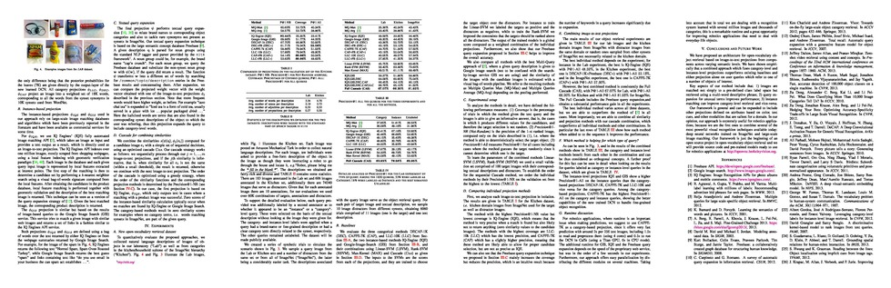
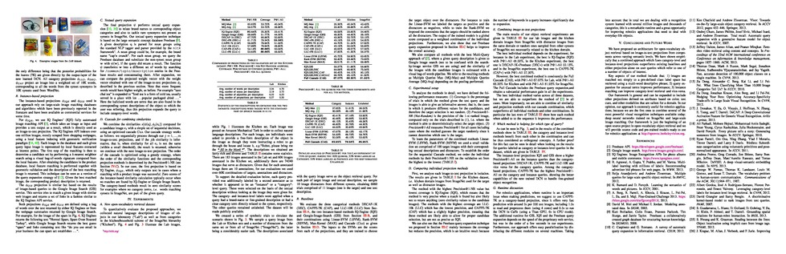

Open-Vocabulary Object Retrieval.
Sergio Guadarrama, Erik Rodner, Kate Saenko, Ning Zhang,
Ryan Farrell, Jeff Donahue and Trevor Darrell.


We address the problem of retrieving objects based on open-vocabulary natural language queries: Given a phrase describing a specific object, e.g., "the corn flakes box", the task is to find the best match in a set of images containing candidate objects. When naming objects, humans tend to use natural language with rich semantics, including basic-level categories, fine-grained categories, and instance-level concepts such as brand names. Existing approaches to large-scale object recognition fail in this scenario, as they expect queries that map directly to a fixed set of pre-trained visual categories, e.g. ImageNet synset tags. We address this limitation by introducing a novel object retrieval method and we also propose a method for handling open-vocabularies, i.e., words not contained in the training data. Our method can combine category- and instance-level semantics in a common representation. Our approach can accurately retrieve objects based on extremely varied open-vocabulary queries.
The source code of our approach will be available on this webpage together with pre-trained models and can be directly used for robotics applications.
 
